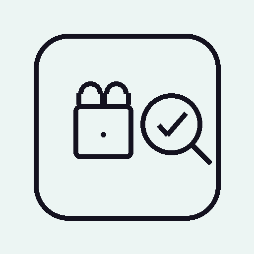
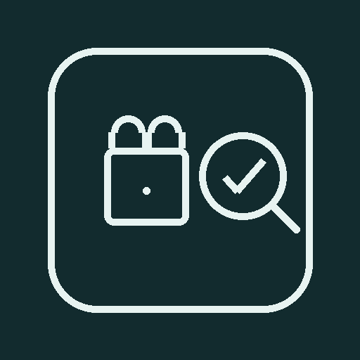

Zusatzstoffe, Kosmetik & Barcode – ein Check
Nur Information – keine medizinische oder kosmetische Fachberatung.
Prüft automatisch gegen beide Datenbanken und zeigt die passende Quelle. Bei bekannter Produktart hilft die gezielte Auswahl, Fehltreffer durch Namensüberschneidungen zu vermeiden.
Mindestens 2 Zeichen eingeben, um in beiden Datenbanken nachzuschlagen – ganz ohne Foto oder Barcode.
Noch keine Favoriten. Tippe im Ergebnis auf den Stern ☆.
Favoriten werden automatisch lokal auf diesem Gerät gespeichert, sobald du den Stern antippst – jederzeit über den Stern oder "Leeren" wieder entfernbar.
"Sichern" erzeugt eine Datei mit deinen Favoriten (z. B. für ein neues iPhone) – "Wiederherstellen" liest sie wieder ein. Beides bleibt lokal, es wird nichts an einen Server übertragen.
Nach Verordnung (EG) Nr. 1333/2008 zugelassene Lebensmittelzusatzstoffe – Farbstoffe, Konservierungsstoffe, Süßungsmittel u. a.
Stehen im Verdacht, das Hormonsystem zu beeinflussen (z. B. bestimmte Parabene, UV-Filter).
Feste, schwer abbaubare Kunststoffpartikel in der Formel.
EU-weit deklarationspflichtige Duftstoffe, die Kontaktallergien auslösen können.
Können Haut reizen oder stehen unter Beobachtung.
Hinweis auf tierischen Ursprung bzw. schwer abbaubare Stoffe.
Werden zusätzlich in jedem gescannten Text erkannt (Gluten, Milch, Nüsse, Soja u. a.).
Zusatzstoffe: Verordnung (EG) Nr. 1333/2008, Kurzbewertungen auf Basis öffentlich zugänglicher EFSA-Stellungnahmen. Allergene: Anhang II der Verordnung (EU) Nr. 1169/2011 (LMIV). Kosmetik/INCI: Verordnung (EG) Nr. 1223/2009, Mikroplastik-Einstufung zusätzlich auf Basis REACH-VO (EG) Nr. 1907/2006, Anhang XVII Nr. 78. Barcode-Produktdaten: © Open Food Facts-, Open Beauty Facts- bzw. Open Products Facts-Mitwirkende, Lizenz ODbL. Alle Einstufungen sind eigene, neutrale Zusammenfassungen ohne Gewähr.
Ausgewählte Punkte werden beim Barcode-Live-Scan sowie beim Foto-/Textscan sofort als Warnung markiert.
Wird ausschließlich lokal auf diesem Gerät gespeichert.